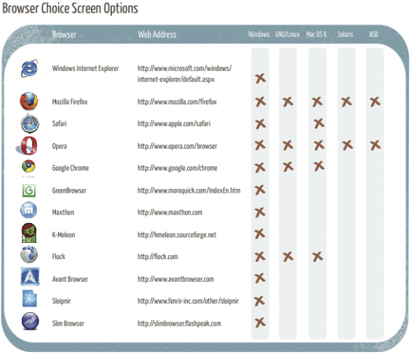

Overview of Browsers
26th February, 2010
These are the browsers included on the Browser Choice screen.

We encourage you to read about them and talk to friends and colleagues so you can learn more about your options.
- Apple Safari
- Avant Browser
- Flock
- Google Chrome
- GreenBrowser
- K-Meleon
- Maxthon
- Mozilla Firefox
- Opera
- Sleipnir
- Slim Browser
- Windows Internet Explorer
What does the browser choice screen look like?
Not all browsers are included on the Browser Choice screen. You might want to consider these other options.